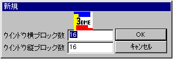
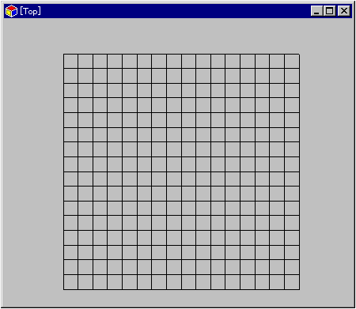
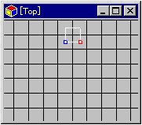
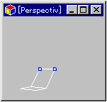
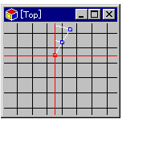
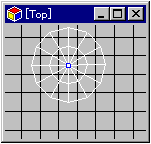
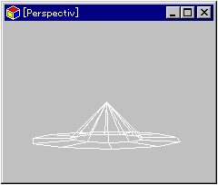

★Graphic Tools Guide
★3DMEユーザーズマニュアル
★Graphic Tools Guide
★3DMEユーザーズマニュアル
▲
戻る｜
進む▼
汎用３Ｄモデリングツールユーザーズマニュアル
３．サンプル作成チュートリアル
ここでは円錐型のモデルを作成し、テクスチャーの設定を行います。
■モデルを作る
- 1) 新規ファイル作成
- 「ファイル」→「新規」のコマンドを選択すると、縦横のブロック数を聞いてきます。ここで、必要となるマップの大きさを選択します。とりあえずここでは縦横に１６を代入します。
デフォルトでは１ブロックは128ドットの大きさです。データのセーブ時やプロパティの項目で設定を変えることもできます。

- 2) ウインドウ調整
- Topビュー(真上から見た図)のウインドウが開かれます。ここで「スケール拡大縮小」を使ってウインドウ内に全てのブロックが収まるよう調整します。

- 3) ポリゴン作成
- 頂点モードにした状態で、「ポリゴン追加」コマンドを選択します。画面中央に正方形のポリゴンが表示されます。その後、選択コマンドで下半分の２頂点を選択します(メニューのモードは「頂点選択モード」にしておきます)

- 4) ポリゴン延長
- このポリゴンを画面下に向かって延長します。「移動」コマンドを選択すると、メニュー下部に「XYZ」パラメータの入力窓が出てきます。そこでYに128を代入し、「PP+」のボタンを押します。
すると、同じサイズのポリゴンがさっきのポリゴンの下に１つできます(座標系が右方向に＋Ｘ，下方向に＋Ｙのため)。これで合計２マスが縦に並んだポリゴンができあがります。
- 5) ポリゴンの立体化
- ２マス並んだポリゴンのうち、「選択」コマンドで一番下の２頂点を選択します。ウインドウ左上の[Top]と書かれている箇所の左部分をクリックし、Right方向から見た視点に切り替えます。
「移動コマンド」を選択します。「XYZ」パラメータの入力窓に、Y=128,Z=128を代入し、「決」ボタンを押します。これで２枚目のポリゴンが45度傾いた状態になります。
Perspective視点に切り替えて、モデルの状態を確認してください。

- ＜ここまででトラブルシューティング＞
- 「選択」コマンドで頂点が選択できない！
- ポリゴンモードになっていませんか？ポリゴンモードでは、頂点単位で選択することができません。メニューウインドウの一番上左部分をクリックして、頂点モードにしてください。
- 誤って余分なポリゴンを作成してしまった！
- ポリゴンモードに切り替えて余分なポリゴンを選択し、「Dell」コマンドで削除してください。
- 6) 扇型ポリゴンへの変形
- 再び画面をTopビューに切り替えてください。縦に並んだ二つのポリゴンの、右側の３頂点を選択します。その後X方向に-128ドット移動させ、左側の３つの頂点と重ね合わせます。
次に「回転」コマンドを選択します。「移動」コマンドと同様にメニュー下部にパラメータ入力の窓が開きます。ここで「text」のチェックボックスをクリックすると、マップウインドウに赤い十字線が現れます。これが回転の中心点です。
これをドラッグして３頂点の一番下の頂点に合わせます。合わせたらパラメータに30を入力し、「決」ボタンを押します。すると、Topビューでは30度の角度の扇型のポリゴンができあがります。

- 7) 円錐型ポリゴンへの移行
- 6)の状態から更に「PP+」のボタンをクリックすると、次々と扇形ポリゴンが形成されていきます。一周して円錐型になったら、「選択」コマンドで円錐の中心にある頂点を選びます。
実はこの頂点はいくつもの頂点が重なって置かれている状態になっているので(選択した後で拡大してみてください)、これをひとつにまとめます。
「頂点結合」コマンドを実行してください。これで中心にある頂点が１つにまとまりました。同様にして、残りの２頂点×２個(円錐の開始と終了の頂点)をともに一つの頂点にまとめてください。

- これで円錐ポリゴンが完成しました。Perspective画面にして、いろいろな角度からモデルを確認してください。また、Texture画面にすると黒い山のようなモデルが見えます。何も見えなくなる場合はポリゴンが裏返っています。
- 8) データのセーブ
- 一旦ここでデータをセーブします。「ファイル」→「保存」を選ぶとファイルセーブのウインドウが開きます。任意のディレクトリに*.pof形式でセーブしてください。
- ＜ここまででトラブルシューティング＞
- 「回転」コマンドででたらめな円ができあがってしまう！
- 中心がずれてませんか？赤い十字線をできるだけ回転の中心に合わせるようにしてください。
- 「頂点結合」を行ったらヘンな形状になってしまった！
- 中心以外の頂点を選択していませんか？中心部分に集まった頂点だけを選択して結合してください。
- 指示通りできたかどうか不安だ！
- 出来上がりの図を下に示します。

▲
戻る｜
進む▼
★Graphic Tools Guide
★3DMEユーザーズマニュアル
Copyright SEGA ENTERPRISES, LTD,. 1997